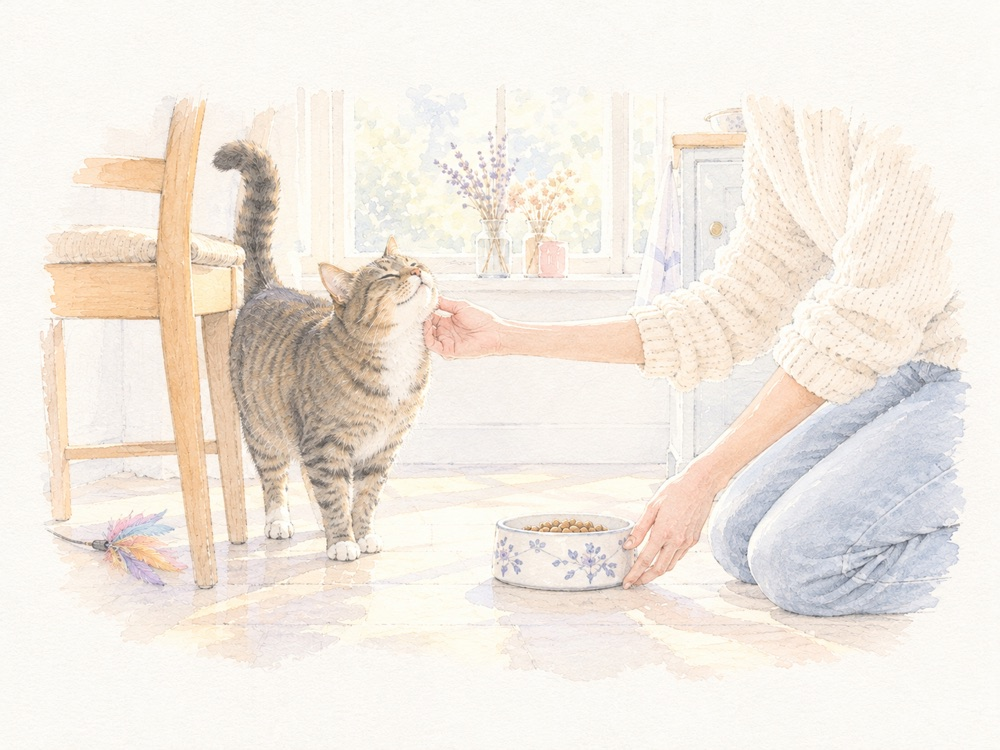
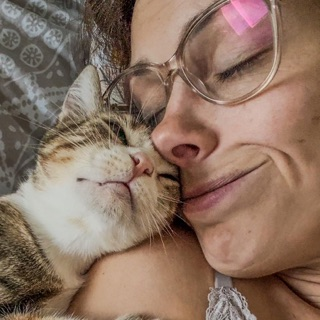

- Obligation légale : ACACED Chat
- Confiance : Label France Petsitters
- Confiance : Label Truffe
- Confiance : Secouriste animalier
- Obligation légale : Transport d'animaux vivants
Irina
MiaoucratieVisites et soins à domicile, chats uniquement.
20 km par la route autour de Domagné (35), au-delà sur devis
Irina ne garde que des chats : leur majesté féline a ses exigences, et elle les connaît. Elle passe aussi chez les chats malades, craintifs ou âgés.
Chez vous, votre chat garde ses coins et ses horaires. En plus du bol rempli, il a de la présence et quelqu'un qui garde un œil sur sa forme. Vous, vous recevez des nouvelles et des photos après chaque passage.
Catmom de 6 chats, Irina est bénévole engagée en protection féline depuis plus de 10 ans, pour l'association Moustaches & Cie. Elle est formée aux premiers secours félins et au transport d'animaux vivants.
Sa formation de comportementaliste félin est en cours, et ses consultations ouvriront en décembre-janvier.